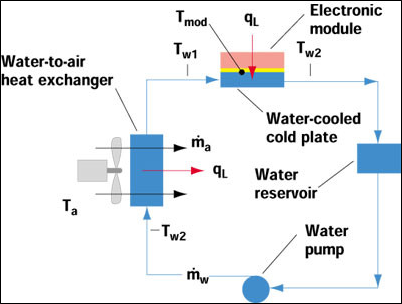

10x Raspberry Pi 3 Supercomputer Heatsink Design Calculations
In what follows we will perform calculations that will dial in the fluid flow rates required to properly cool a supercomputer cluster composed of 10 Raspberry Pi 3's. We will make heavy use of the article at http://www.electronics-cooling.com/2002/05/estimating-temperatures-in-a-water-to-air-hybrid-cooling-system/ to perform these calculations
1 Power Supply
2 Current Draws
3 Temperatures
4 Power Consumptions
5 Thermal Impedance Estimate of CPU (case to ambient) [deg C/W]
6 Thermal Impedance Estimate of CPU (junction to case)
7 Thermal Impedance Estimate of CPU (junction to ambient) [deg C/W]
8 Calculation of Heatsink Thermal Impdedance Requirements
9 Water-cooled Heatsink Design Calculations
From http://www.electronics-cooling.com/2002/05/estimating-temperatures-in-a-water-to-air-hybrid-cooling-system/
Figure 1: /home/mark/Engineering/Supercomputer/Thermal Calcs/water_cooled_heatsink_model.jpg

We will assume that the initial water temperature is 25C [deg C]
| (%i142) | T_water_initial: 25; |
We will assume a water cooled heatsink thermal impedance of 0.2C/W [C/W]
| (%i143) | R_theta_heatsink_cp: 0.2; |
The temperature of the CPU according to Equation 1 in the article is: [deg C]
| (%i144) | T_CPU_initial: (P_RPi3_4_core_heavy_load * R_theta_heatsink_cp) + T_water_initial; |
Typical Water Flow Rate [Liters per Hour]
| (%i145) | Flow_rate_typ: 50; |
Conversion factor between liter of water to kg of water (at 4C) [L/kg]
| (%i146) | Liters_to_kg_water: 1; |
Mass of water flowing past water cooled cold-plate: [kg/s]
| (%i147) | M_dot: (Flow_rate_typ / Liters_to_kg_water) * (1/3600); |
Specific heat of water [J / (kg x deg C)]
| (%i148) | C_pw: 4186; |
Specific Heat Rate of water flowed to cold-plate [J/(sec x deg C)]
| (%i149) | C_w: M_dot * C_pw; |
| (%i150) | float(C_w); |
Temperature rise of water: [deg C]
| (%i151) | delta_T_water: P_RPi3_4_core_heavy_load / C_w; |
Estimate effectiveness of the heat exchanger: [arb units]
| (%i152) | epsilon: 0.1; |
Calculate Specific Heat Rate of air flowing through heat exchanger:
Specific heat of air (at 300K) [J / (kg x deg C)]
| (%i153) | C_pa: 1005; |
Mass flow rate of air past heat exchanger: [cubic feet per minute]
| (%i154) | M_dot_air_CFM: 25; |
Mass flow rate of air past heat exchanger: [kg / s]
| (%i155) | M_dot_air: M_dot_air_CFM * (1/60) * (1.2754) * ((0.3048)^3); |
Specific Heat Rate of air flowing through heat exchanger [J / (s x deg C)]:
| (%i156) | C_a: M_dot_air * C_pa; |
Initial temperature of the air [deg C]
| (%i157) | T_air_initial: 25; |
Calculate effectiveness of the heat exchanger: [arb units]
| (%i158) | epsilon_calc: P_RPi3_4_core_heavy_load / (C_a*((T_water_initial+delta_T_water)-T_air_initial)); |
Final temperature of the CPU [deg C]
| (%i159) | T_CPU_final: P_RPi3_4_core_heavy_load * (R_theta_heatsink_cp + ((1/(epsilon_calc*C_a)) - (1/C_w))) + T_air_initial; |
Temperature rise of the CPU [deg C]
| (%i160) | delta_T_CPU_heavy_load_WC: T_CPU_final - T_water_initial; |
10 10x Water-cooled Supercomputer Cluster Heatsink Design Calculations
From http://www.electronics-cooling.com/2002/05/estimating-temperatures-in-a-water-to-air-hybrid-cooling-system/
We will assume that the initial water temperature is 25C [deg C]
| (%i161) | T_water_initial: 25; |
We will assume a water cooled heatsink thermal impedance of 0.2C/W [C/W]
| (%i162) | R_theta_heatsink_cp: 0.2; |
The temperature of the CPU according to Equation 1 in the article is: [deg C]
| (%i163) | T_CPU_initial: (P_RPi3_4_core_heavy_load * R_theta_heatsink_cp) + T_water_initial; |
Typical Water Flow Rate [Liters per Hour]
| (%i164) | Flow_rate_typ: 50; |
Conversion factor between liter of water to kg of water (at 4C) [L/kg]
| (%i165) | Liters_to_kg_water: 1; |
Mass of water flowing past water cooled cold-plate: [kg/s]
| (%i166) | M_dot: (Flow_rate_typ / Liters_to_kg_water) * (1/3600); |
Specific heat of water [J / (kg x deg C)]
| (%i167) | C_pw: 4186; |
Specific Heat Rate of water flowed to cold-plate [J/(sec x deg C)]
| (%i168) | C_w: M_dot * C_pw; |
| (%i169) | float(C_w); |
Estimate effectiveness of the heat exchanger: [arb units]
| (%i170) | epsilon: 0.15; |
Calculate Specific Heat Rate of air flowing through heat exchanger:
Specific heat of air (at 300K) [J / (kg x deg C)]
| (%i171) | C_pa: 1005; |
Mass flow rate of air past heat exchanger: [cubic feet per minute]
| (%i172) | M_dot_air_CFM: 25; |
Mass flow rate of air past heat exchanger: [kg / s]
| (%i173) | M_dot_air: M_dot_air_CFM * (1/60) * (1.2754) * ((0.3048)^3); |
Specific Heat Rate of air flowing through heat exchanger [J / (s x deg C)]:
| (%i174) | C_a: M_dot_air * C_pa; |
Initial temperature of the air [deg C]
| (%i175) | T_air_initial: 25; |
Number of units in supercomputer cluster [units]
| (%i176) | N_units: 10; |
Final temperature of the CPU [deg C]
| (%i177) | T_CPU_final: N_units * P_RPi3_4_core_heavy_load * (R_theta_heatsink_cp + ((1/(epsilon*C_a)) - (1/C_w))) + T_air_initial; |
Temperature rise of the CPU [deg C]
| (%i178) | delta_T_CPU_heavy_load_WC: T_CPU_final - T_water_initial; |